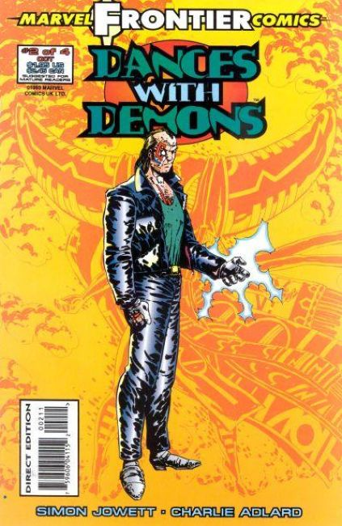
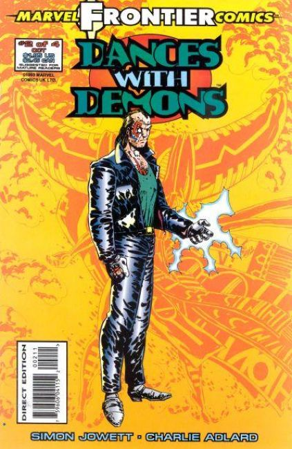

Chapter One "Ghost Dancer." James Owl is an unwilling heir to the power of his Native American ancestors and stalked by an evil spirit who covets his gifts and who, in doing so, leaves a trail of blood and destruction in his wake. As James Owl attempts to escape from his destiny, the flesh eating shape shifting Manitou brings his hunt to Beverly Hills...and Owl's loved ones. Reluctant sorcerer-in-training James Owl is taken on a vision quest! Meanwhile, the Manitou and Iktomi the Trickster negotiate a deal between demons.